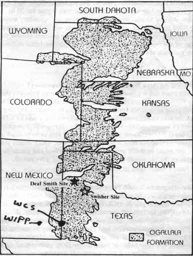

This document is from a protest a few years ago about another dump over the Ogallala,
but many of the same issues apply to the Andrews facility.

With current hunger and starvation, should some of the best agricultural land and
water anywhere be considered for the world 's first nuclear waste repository?
Don't Waste Texas
Questions About Nuclear Waste
What Is A High-Level Nuclear Waste Repository?
There is no planned or operating high-level nuclear waste repository anywhere in
the world. The U.S. Department of Energy (DOE) plans call for a repository
similar to an underground mine, about one-half mile deep, which is intended to
permanently dispose of 70,000 metric tons of spent fuel from nuclear power plants
and solidified high-level military waste. The wastes would be buried at the site
at the rate of about 3,000 metric tons a year for 20 to 25 years. After a 50-year
period of monitoring, the repository would be filled up with rock, the surface
buildings would be torn down, and the site would be left unattended. Large
markers around the edge of the repository site would warn people that lethal
radioactive materials are buried there.
How Big An Area Would Be Taken By The Repository?
The exact size is uncertain. Department of Energy estimates that the buildings to
handle the wastes would cover about 510 acres. The subsurface area mined for the
wastes would be about 3,359 acres, and the area totally controlled and federally
owned would be 5,760 acres (9 square miles). However, the Environmental
Protection Agency (EPA) standards allow the controlled area to be as much as 5
kilometers (more than 3 miles) from the site, which means that the site could be
9,000 acres or more. All surface and subsurface rights to the site would be owned
by the federal government.
How Many Jobs Would There Be at a Repository?
No one knows and there are only rough estimates. During the site characterization
phase, DOE currently estimates a peak of 356 workers, 10 to 25% of whom would
be hired locally. During repository construction, DOE estimates that there would be
about 1,350 construction workers and about 1,500 workers during the
20-25 years operational life of the repository. However, these estimates are very
different from earlier DOE estimates of 1,700 construction workers and 870
operational workers.
The only similar facility is the Waste Isolation Pilot Plant (WIPP) project east
of Carlsbad, New Mexico, which is currently being constructed. During site
characterization there, peak employment was 150 workers. During repository
construction DOE had estimated a peak workforce of 1,300, but the actual peak has
been less than 675. The construction contractor was a Japanese company,
Ohbayashi-Gumi, Ltd. DOE's estimates that there will be 440 or fewer operational
workers.
Based on DOE's past overly optimistic estimates and experience, actual employment
would be much less than the current estimates. Repository employment figures are
especially suspect because DOE intends to propose that a separate packaging and
handling facility (Monitored Retrievable Storage) would be built in Tennessee to
eliminate re-packaging at the repository. Such a change in the repository would
reduce employment by 300-600 workers.
Why Do People Oppose DOE's Activities In Deaf Smith County?
There are many reasons.
1) Land condemnation. DOE's owning of 9 square miles or more of land will require
condemnation of prime farmland, relocation of several families, and the virtual
destruction of the Richardson Seed Farm, a unique source of foundation and hybrid
seeds. This condemnation may occur before DOE can begin their testing program,
called site characterization, even if there is no repository and no radioactive
waste is ever brought into the county. Furthermore, DOE's activities have already
resulted in reducing property values by about one-third near the site.
2) Salt contamination. Because the waste would be buried in bedded salt, large
volumes of salt would be mined and brought to the surface. The resulting salt
piles would sterilize the soil, and would probably contaminate land off-site
where salt would be blown. Repository construction would require excavation of
more than 51 million tons of salt, creating a salt pile up to 50 feet high,
covering at least 50 acres.
3) Agricultural impacts. Richardson Seed Company had sales of more than $4
million in 1984. With the addition of other crop and livestock production at the
site, agricultural losses from condemnation could be more than $10 million a
year. In addition, major agricultural producers, such as Arrowhead Mills, Frito
Lay, and Holly Sugar could be severely impacted by a repository. Some of these
companies have said that they might have to close their operations completely if
a repository were constructed because of the public concern about radioactive
contamination.
4) Possible water contamination. Potential depletion and contamination of the
Ogallala and Santa Rosa aquifers, which provide irrigation and drinking water to
8 states, could have widespread impacts. During site characterization, any salt
contamination of the aquifers could damage land being irrigated. Given the
radioactive hazards of the wastes for over 200,000 years, any repository leaks
could seriously contaminate the aquifer. During site characterization, two shafts
12 feet in diameter would be drilled through the aquifers to about 2,500 feet
deep. No such shafts have ever been constructed through any such aquifers. The
technology proposed by DOE would freeze water during drilling, thereby curtailing
water availability in nearby wells. Water depletion during site characterization
and repository construction and operation could substantially lessen the flow
from offsite irrigation wells.
5) Taking Vega's water supply. The Santa Rosa well in the site is Vega's only
long-term water supply source because its existing Ogallala wells are being used
up. While the well should have sufficient water for current irrigatior. uses and
for Vega for hundreds of years, DOE would acquire the well when it condemned the
land for site characterization or repository construction. No alternative water
supply for Vega has been identified.
6) Geologic unsuitability of the site. The Lower San Andres 4 bedded salt is
thinner,weaker, and has more non-salt interbeds than many other bedded salt
areas. In addition, salt has some negative qualities for waste disposal because
water will dissolve it, heat generated by the wastes will expand it, and tunnels
close quickly making retrievability difficult. In addition, there are possibly
oil and natural gas supplies underneath the site, which future miners will try to
develop, thereby creating holes through which waste could get into the aquifers
or come to the surface. All of these problems increase the likelihood that the
wastes would not stay in the repository for thousands of years.
7)Better sites could be found. The Salina Basin in Michigan, Ohio, New York, and
Pennsylvania appears to have better quality salt and is much closer to the wastes
(85% of which is east of the Mississippi River). The federal government dropped
its investigations in the Salina Basin solely because it was asked to do so by
governors of the states involved. Other rock types, including granite and other
crystalline rocks and shale and other argillaceous rocks, could also possibly be
used for waste disposal, but DOE has not considered them.
8) Socioeconomic disruptions from incoming people. Long-time residents on the
site whose houses will be condemned will have to move. Other people concerned
about contamination and accidents may also move out of the area. Construction
workers would move into the area, some of whom would likely live in new trailer
parks near the site. Workers' families could overcrowd area schools, require
increased police and fire protection, hospitals, water and sewer construction and
other services. Workers and trucks along highways, especially Farm Road 2587,
would cause traffic jams and road damage. Relatively few jobs would go to
existing residents. Some people would come to the area searching for jobs which
would not be available and could add to existing unemployment. According to a
Texas Department of Agriculture (TDA) survey, 81 percent of the local residents
oppose the repository, while only 12 percent support it. A more recent TDA survey
found that local businesses representing 84 percent of business revenues believe
that a repository would not be good for their business.
Additionally, if a repository is built, any operational or transportation
accidents could cause alarm or contamination.
9) Transportation hazards. The containers to bring the wastes to a repository do
not exist and haven't yet been designed. DOE's current estimates are that there
would be about 180,000 waste shipments- more than 16 trucks a day, 365 days a year
for 30 years. If all of the wastes were transported by train, there would be
almost 24,000 shipments- more than 2 trains every day. In addition to frequent,
planned releases of radiation along transportation routes, there would be
numerous accidents. Also unknown is where the accidents would occur, how serious
they would be, how many people would be affected, how much land and water would
be contaminated, who would pay for any damages above the present liability limit
of $50O,000.
Wouldn't the Repository Be Similar to the Pantex Plant?
No. The only major similarity is that both would be Department of Energy
facilities. However, DOE's history of handling high-level radioactive waste isn't
very good, as thousands of gallons of liquid waste have leaked from tanks at
Hanford, Washington. Pantex handles very small quantities of military waste.
Spent fuel from commercial power plants, the main source of the proposed
repository wastes, has literally billions of times the curie concentrations that
Pantex wastes have. While the Pantex Plant has operated for years, no one has
ever built and operated a repository. The Pantex facility does not drill holes
through Ogallala aquifer and store waste below it, as the repository would do.
While Pantex employs thousands of people, the repository would employ far fewer
people.
For more information:
NUCLEAR WASTE TASK FORCE, INC.
218 E. Bedford - Dimmitt, TX 79027
(806) 647-5735
POWER (People Opposed to Wasted Energy Repositories)
Route 1 - Hereford, TX 79045
(806) 258-7583
Richardson Seed Farm
Drawer B - Vega, TX 79092
(806) 267-2379
STAND (Serious Texans Against Nuclear Dumping)
Rt.2, Box 28 - Tulia, TX 79088
(806) 668-4678
STAND-Amarillo
6231 I-40 West, Apt.205- Amarillo, TX 79106
(806)
352-1662
U.S. Department of Energy
505 King Avenue
Columbus, OH 43201-2693
(614)
424-5916